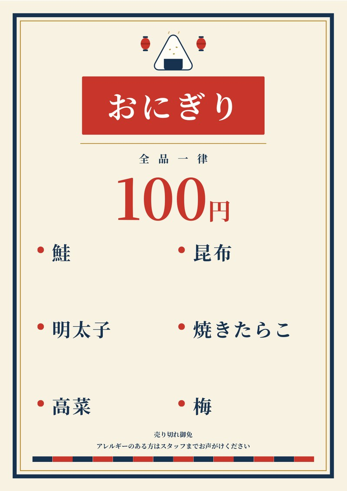
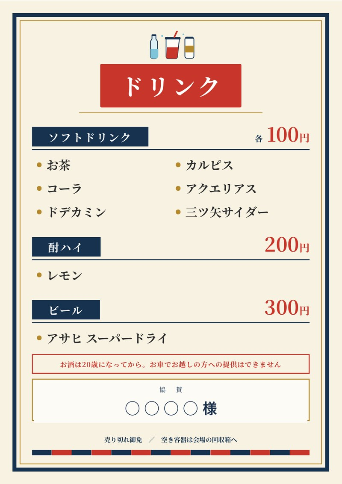
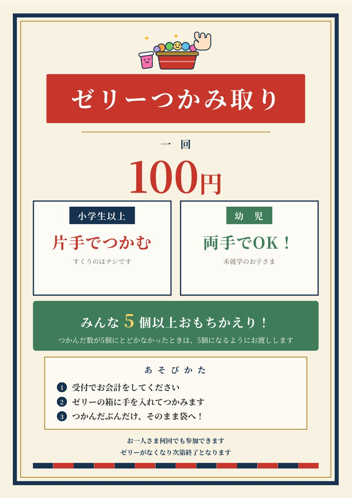

テントを立てたら、次はメニュー表です。
おにぎり、ドリンク、ゼリーのつかみ取り。メニュー表ははじめからAIに作ってもらうつもりでいたので、さっそく相談してみました。

最初、AIに「商品名と値段を教えてください」と聞かれました。でもその時点では値段が固まっていなかったので、「先に形だけ見たい」とお願いしました。
仮の値段で3枚パッと出してくれて、それを見たら一気にイメージがつきました。先に完成形を見てから中身を決める。会議の資料づくりにも使えるやり方やと思います。
1枚目を見て気になったのが文字の大きさ。屋台のメニュー表は、列に並ぶ前の人が離れたところからパッと見て決めるもんです。「もっと大きく」と伝えたら、ぐっと大きくしてくれました。
ついでに「現金のみ」の一文も消してもらいました。うちの出店で電子マネーが使えるわけないので。

※ 協賛先のお名前は伏せています

つかむのが下手な子が1個2個しか取れなかったらかわいそうなので、「5個に届かへんかったら5個になるようにお渡しします」と書いておきました。当日、受付の人が迷わずに済みます。
値段を伝えて、大きさを直してもらって。口で言うだけで、そのつど作り直してくれる。これがいちばんありがたいところでした。
紙に印刷して、当日テントに貼ります。当日の様子も、うまくいってもいかんくても、正直に書きます。
ほな、また。